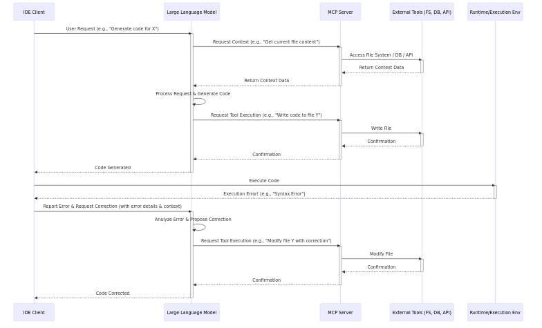
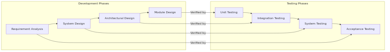

1. Tren Coding dengan AI (2024 - 2025)
Evolusi: Era Copy-Paste (Nov
2024)
- Platform: Web Chat (ChatGPT, Gemini)
- Workflow: Manual (Prompt -> Copy -> Paste
-> Debug)
- Keterbatasan: Konteks minim & rawan error
Diagram Era Copy-Paste
 Diagram Era Copy-Paste
Diagram Era Copy-Paste
Screenshot Era Copy-Paste
 Screenshot Era Copy-Paste
Screenshot Era Copy-Paste
Evolusi: Integrasi IDE (Feb
2025)
- Platform: Ekstensi IDE (Roo Code, Cline)
- Kelebihan: Memahami konteks dari basis kode
Arsitektur Model Context
Protocol (MCP)
- Konsep: Standar komunikasi antara AI & IDE
untuk berbagi konteks.
- Cara Kerja: Klien (IDE) terhubung ke Server MCP
yang menyediakan ‘tools’ (akses file, DB, dll).
- Manfaat: Konteks lebih kaya untuk LLM,
interoperabilitas, keamanan data.
Diagram Arsitektur MCP

Arsitektur Model Context
Protocol
Screenshot Integrasi IDE
 Screenshot Integrasi IDE
Screenshot Integrasi IDE
Evolusi: CLI Assistant (Juli
2025)
- Platform: CLI (Gemini CLI, Claude Code)
- Kelebihan: Otonom, dapat eksekusi perintah &
I/O file
- Peran Developer: Supervisor
Diagram CLI Assistant
 Diagram CLI Assistant
Diagram CLI Assistant
Screenshot CLI Assistant
 Screenshot CLI Assistant
Screenshot CLI Assistant
2. Workflow SDLC dengan AI
Model V dalam Software
Engineering

V-Model Diagram
A. Requirement & Test
- Proses Bisnis -> Spesifikasi
- AI mengubah ide menjadi user stories & use
cases.
- Spesifikasi -> Test Scenario
- AI membuat test cases (happy path, edge cases, dll).
B. Desain Aplikasi
- Arsitektur
- AI merekomendasikan pola arsitektur & teknologi.
- Skema Database
- AI membuat skema SQL/NoSQL dari model domain.
C. Desain Implementasi
- Class Diagram
- AI mengidentifikasi kelas, atribut, dan relasi.
- Sequence Diagram
- AI memvisualisasikan interaksi antar komponen.
Langkah-langkah Adopsi
- Eksplorasi:
- Coba berbagai mode: Web, IDE, CLI.
- Pahami kapabilitas & batasan.
- Pilot Project:
- Gunakan cloud-based AI pada proyek non-kritis.
- Ukur produktivitas & kualitas.
- Infrastruktur Local LLM:
- Evaluasi kebutuhan LLM lokal untuk keamanan & kustomisasi.
- Adopsi Penuh:
- Fine-tune model dengan data internal.
- Jadikan AI sebagai standar workflow.
4. Hands-on Practices
- Requirement Development
- Test Scenario
- Coding
- CI/CD
Terima Kasih & Diskusi